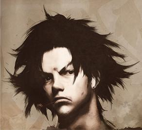
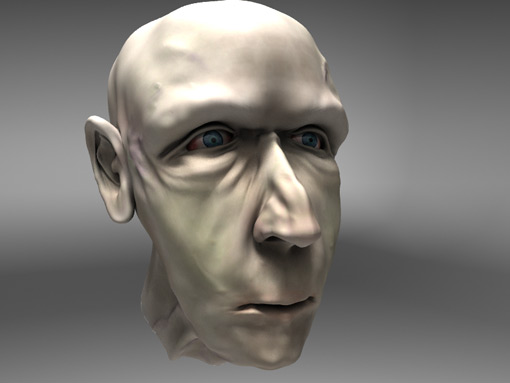

Forums galactiques > Assemblée Galactique : diplomatie officielle > Passage obligé : Présentations
Pages : 1 2 ... 25 26 27 ... 40 41
| Nvalth Tykrus Respect diplomatique : 14  10/03 ETU 23:52 | Score : 7 Détails [i]Un commandant d'une taille importante et doté d'une forte musculature se forma sur l'écran holographique.[/i]
"-Bonjour, commandants, commandantes. Heureux de vous connaître. J'espère que nos relations commerciales seront des meilleures. Bon, à présent je vais me présenter. Je suis un assassin venant d'une planète dont le nom importe peu. En tant que Tork j'ai toujours eu du plaisir à tuer mezs ennemis, avec honneur. Réçamment j'ai mis les pieds sur Boursia, une planète commerçante qui a subit des dégâts suite à l'orage magnétique, orage qui provoqua mon écrasement fortuit sur cette planète. Les aimablesq commerçants de cette planète s'entredéchiraient à mon arrivée, et je les ait gentillement pacifiés avec les soldats qui ont rejoins les rangs de mon armée. En prenant le pouvoir j'ai instauré des institutions démocratiques tgout en gardant le pouvoir, seule chose non-démocratique de mon institution. Néanmoins, tous ces cadavres m'ont légèrement fatigués et j'ai donc décider de perpétuer les valeurs marchandes de Bourisa. C'est pour ça que je me montre à vous en tant que marchand." [i]A ce moment précis, l'hologramme sombre devint clair et on apperçut nettement un homme de grande taille, avec une peau blanche, pâle, caractérisitique des rayonnements solaires très forts dans l'espace, des cheveux longs et bleux, des yeux, bleus et cerclés de jaune, un nez maintes fois cassé, des oreilles légèrement pointues, une musculature puissante mais montrant une certaine grâce, des dents pointues, des espèces de pics parcourant la peau au niveau des bras, des jambes et du dos et un regard carnassier. C'est à cela que ressemblait ce marchand....[/i] [i]*J'espère que je leur ait fait bonne impression...*[i] [small]HRP : Tout ce qui est entre [i]**[/i] représente les pensées de mon personnage![/small] | ||
| Dark Dead Respect diplomatique : 27  11/03 ETU 12:22 | Score : 8 Détails Une créature qui pourrait être qualifiée par certaines cultures de "démoniaque" entra pour la première fois de sa vie dans "l'assemblée galactique des exilés". C'était Dark Dead en personne qui venait s'exprimer à l'assemblée. Il se dirigait d'un pas sûr vers la salle de présentation mais il gardait un oeil rivé sur la porte de la salle des plaintes. Il entra dans la salle des présentations et alla au pupitre. Du haut de l'estrade il se mit à parler d'une voix sombre et caverneuse:
"Je présente mes salutations a l'assemblée. Certains commandants me connaissent déjà grâce à la taverne ou au CPVP mais sachez que je ne suis pas là pour rire. Je me présente en ces jours sombres et troublés de la galaxie des Exilés car je sens que tous les commandants ont plus que jamais le devoir de s'exprimer et de s'expliquer à l'approche de l'apocalypse. Je ne vais pas en parler ici" Dark Dead marqua une pause, laissant les commandants assimiler ses paroles. Puis il reprit: "Pour ceux qui ne me connaissent pas, on nomme ma forme physique Dark Dead. Je suis un démon, un magicien de la puissance noire, un démon déchu toujours rejeté par les anges. Vous avez tous du comprendre qu'il y a une deuxième raison a ma présence ici : certains commandants plus vieux que moi m'ont attaqué et refusent toute voies diplomatiques. J'éspère que vous aurez plus de chance ou plutôt de talent que moi." Dark dead scruta les commandants présents ici, il en reconnaisait quelques-uns. Il se dirigea vers Retoris et se mit a lui parler tout bas. | ||
| Lie Respect diplomatique : 39 14/03 ETU 22:51 | Score : 11 Détails [i]Mon hologramme apparut dans l'Assemblée Galactique. Il était habituel de voir ce genre de chose se produire, toujours ce même bruit électrique un peu strident mais bref. Tous les Commandants de la Galaxie étaient passé par-là à un moment ou un autre. Et pour cette raison, personne ne se retourna.
L'Assemblée était en permanence en discussion, et plusieurs d'entre elles avaient lieu en même temps. Un système d'enregistrement avec titre permettait à tous de participer à nombreux de ces débats sans pour autant quitter sa place et perdre le file des autres dissertations. Pendant que je mets en route le début de quelque conversation, je lisais les quelques donnés que mon ordinateur central me permettait d'avoir au sujet de l'Assemblée. Tout ça est bien intéressant... Je ne vais donc pas les interrompre tous mais enregistré ma présentation.[/i] "Bonsoir à tous Commandants -[small]d'outre tombe...[/small]- Je viens à vous en cette magnifique nuit pour signifier ma présence -[small]dangereuse...[/small-] nouvelle en cette Galaxie -[small] détruite...[/small]- Je viens de succéder à mon père -[small]tué...[/small]- qui par -[small]mes soins...[/small]- triste destin -[small]dessin...[/small]- est mort sur son trône. J'ai appris aujourd'hui même votre existence - [small]pour plus longtemps...[/small]- que mon père avait caché au peuple pour ne pas avoir une tâche plus grande en se développant et participant au débat de l'Assemblée. J'espère que nos liens - [small] serré... [/small]- gagneront en amitié et préserverons la paix en ce monde - [small] maudit... [/small]" [i]Comme c'est bizarre... On dirait qu'il y a une interférence dans ma vidéo maintenant que je la regarde. Comme-ci quelqu'un d'autre parler pendant mon discours un gémissement incompréhensible, même mon hologramme change d'image à certain instant. Pause, où est cette commande... Ah voilà![/i] Le visage du Commandant ressemblée à celui d'un mort en voyant l'image arrêtée. [i]Quelle horreur! On dirait ma copie formelle mais avec les cheveux en batailles, le visage durcit les yeux malicieux et les canines sortis... Oui ça me ressemble, blond, peau claire, yeux noir non! Ces yeux étincellent comme les flammes de l'Enfer... Il faudra que j'en parle à mon mécano au plus vite. [/i] [HRP]Salut! Petit précision, les paroles en [small]petit[/small] sont destinées à être lu, mais pas tout à fait compris par vos personnages ( plus tard mon RP dévoileras tout, sans doute ). Merci de ne pas le prendre en compte sur la vision de mon personnage. [/HRP] [HRP 2]Désolé, je ne comprends pas pourquoi les balises ne fonctionnent pas... [/HRP 2] | ||
| Chasseur de Borgs Respect diplomatique : 43  16/03 ETU 17:02 | Score : 12 Détails Mon nom est Marcus Decimus Meridius, Officier des armées d’Aurore, Général des armées Félix et fidèle serviteur du plus grand roi : Salomon ! Père d’un fils assimilé ; époux d’une femme assimilée… Et j’aurais ma vengeance dans cette vie ou dans l’autre !
J’ai entendu dire que des Borgs vivaient en cette galaxie ; j’ai entendu dire que des combattants s’étaient alliés à ces assassins pour assouvir leur soif de sang… J’ai de l’estime pour les guerriers, mais je n’ai que du mépris pour les traitres ! Ils ont été contaminés par les phéromones de ces êtres abjects… Les miens, tout mon beau village, ont été assimilés de la façon la plus monstrueuse qui soit ! Je chassais l’ours géant de mon pays, lorsque les cloches ont donné l’alerte… J’ai dévalé la montagne et parcouru la plaine ; mais, à mon arrivée, ma femme et mon fils m’attendaient, souriants… Je me suis approché pour les serrer contre moi, mais j’ai soudain compris : ils n’étaient plus, empalés des reins à,la nuque sur de longs pieux de fer noir… Je tombais à genoux rompu de chagrin, mais un Borg sortit de notre maison, et avança vers moi : Vous serez aussi assimilé, toute résistance est inutile ! Je me suis levé et d’un coup de poing, un seul : je l’ai décapité ! J’ai lancé l’auto-destruction de ma planète et je suis parti… Aujourd’hui, je declare : JE VAIS AIDER LES INSURGES POUR CE CONFLIT ! Dussé-je y laisser la vie, ma froide vengeance retentira ! Alea jacta est ! | ||
| jean luc picard Respect diplomatique : 595  16/03 ETU 17:30  | Score : 3 Détails je suis l'unique survivant du Borg! commandant, si la vengeance deborde de votre âme je suis votre Borg!
on t'a reconnu... | ||
| Chasseur de Borgs Respect diplomatique : 43 16/03 ETU 17:38 | Score : 0 Détails Je ne répondrai pas à une créature si immorale !
Rien à foutre, ton acharnement hrp, j’ai déjà donné… Merci ! | ||
| Yoh Respect diplomatique : 390  16/03 ETU 17:44 | Score : 4 Détails Sandor,note son nom dans ton calepin à coté des autres!
Elle fait combien de pages au fait, la liste de ceux qui nous ont balançés des menaces? 50? | ||
| Ju Respect diplomatique : 824  16/03 ETU 17:48 | Score : 0 Détails Dit il en répondant...
Calmez vous tous autant que vous êtes... c'est une salle de présentation... Il s'est présenté, point. Ce qui doit arriver arrivera! "Nouveau" commandant suivant svp... | ||
| Requiem Respect diplomatique : 1538  16/03 ETU 18:04 | Score : 1 Détails Oulala!
Une guerre de vengeance, c'est en vogue en ce moment. Les canons sont pas pres de s'arreter. Bientôt on aura même plus besoin d'évoquer le mot vampire pour se provoquer en duel. Du sang du sang et toujours du sang... Mais de quoi je me plains? Merci de me faire parvenir les mourrants. | ||
| Belzebot Respect diplomatique : 1499  16/03 ETU 18:07 | Score : 1 Détails Commandant Maximus, sa sainteté et briantissime grandeur comprend votre haine du borg. Malheureusement, il n'en reste qu'un, et pas celui contre lequel sa sainteté a le plus de griefs.
Cela etant dis, soyez sur que le passé borg de certains commandants ne sera jamais oublié. Le temps viendra ou la justice crabe frappera d'une pince de Fer. Le rituel de la pesée de leurs ames ne necessitera pas grand temps... Sur ce, jeunes commandant, à vous... KALAMAR VII | ||
| Nezhal Respect diplomatique : 923  16/03 ETU 18:09 | Score : 3 Détails Cher Requiem, j'ai le regret de vous annoncer que nous ne pouvons pas satisfaire votre demande. Hyacinthe nous vide déjà nos mourrants.
Je vous propose donc d'aller voir chez les Insurgés. Cordialement, Nezhal | ||
| Mikael Aguirre Respect diplomatique : 10  26/03 ETU 18:10 | Score : 10 Détails Mikael Aguirre avait déménagé hier, il était arrivé dans une nouvelle galaxie inconnu a ses yeux. Il marcha et regarda un peux partout puis il vit une immense bâtisse. Il s’approcha un peu plus et il lit une pancarte avec marqué dessus « Assemblée Galactique de la Galaxie des Exilés ». Curieux, Mikael rentra, il vit alors un couloir qui s’étendait à perte de vue. Il marcha un peu par, un peu par la en titubant (normal après trois bouteilles de vodka), et il lit sur une des portes « Passage Obligatoire pour les nouveaux arrivants ». Il ouvrit la porte et il avança au milieu de la grande salle sombre. Un cercle de lumière jaillit à son emplacement...
** - Qui es-tu ? (fit une voix grave) - Moi ? (il regarda autour de lui) Ah oui, moi ! Il y a personne d’autre ici ^^ - Qui es-tu ? - Je m’appelle...Ma mère m’a dit de ne jamais dire mon nom à des inconnus, alors dites moi qui vous êtes et je vous dirais comment je m’appelle. - Qui es-tu ? - Ah...je vois, t’es plutôt du genre borné têtu et ronchon toi ! Bon allé, je m’appelle Mikael Aguirre et j’ai 22 ans ! Je suis brun et j’ai une grosse...(il réfléchit un moment) touffe de cheveux sur la tête. Je viens de très loin et...je pense...que...(à la merde, j’ai plus rien à dire !!)...l’égalité des hommes par rapport au femme est très bien (bon, c’est mieux que rien ^^) ** La lumière disparut et Mikael sortit en se prenant la porte dans la face faute de clarté... | ||
| Hagal Thorn Respect diplomatique : 118  28/03 ETU 15:08 | Score : 10 Détails Déja plus de trois emaines qu'il errait sans but, dans cet espace infifni, seul, au milieu de rien.
Hagal se trouvait dans le vaisseau mère de sa flotte impériale désormais détruite. Plus de trois semaines que cette foutue étoile avait explosé, réduisant à néant l'Empire Planétaire des Thorn. Il était archange, parmis les anges aux ailes sombres, il était générale de la Divine Alliance, faite entre les trois espèces d'anges, , les anges aux ailes d'or, les anges aux ailes sombres et les anges de la mort. Il voulait recréer cette alliance, mais il lui faudrait pour cela retouver une terre où il pourrait commencer une nouvelle ère. "Nous entrons dans une nouvelle galaxie!" L'ordinateur de bord avait trouvé une galaxie; le vaisseau commençait à trembler, Hagal regarda à travers la vitre de son cocpite, il vit en effet des millions d'étoiles, différentes de celles qu'il voyait, jadis, dans le ciel de l'Empire. Cela ne faisait aucun doute, il se trouvait bel et bien dans une nouvelle galaxie. "Tara (c'était le nom qu'il donnait à l'ordinateur de bord) peux-tu identifier cette galaxie? -Non monsieur. -Tu es sûre? -Attendez... -Quoi?! -Je reçois un signal très faible... -Tu arrives à le decripter? -Une seconde, ... je crois que... -Quoi? Qu'est-ce qui se passe?! -Ils viennent de m'infiltrer! -Qui ça, "ils"!?! - Je ne sais pas, je... -Ici l'assemblée galactique de la Galaxie des exilés, veuillez decliner votre identité! -Je ne comprend pas, qui êtes-vous? -Vous n'avez pas à en savoir davantage, dites-nous qui vous êtes! -Je m'appelle Hagal Thorn 1er, anciennement empereur de l'Empire Planétaire des Thorn, archange aux ailes sombres, empâte, j'ai 22 ans. -Très bien, nous prenons le contrôle de votre vaisseau, laissez-vous guider jusqu'à l'Assemblée. Il attendit quelques minutes avant d'arriver à l'assemblée. Il entra dans la salle couvert de taches noires et de brûlures. "Qu'avez-vous à la mains? -C'est Tara, mon ordinateur de bord, enfin ce qu'il en reste. Vous me direz combien je vous dois pour le spatioport, j'étais à court de carburant et du coup, je me suis un peu ecrasé, mais ne vous inquiétez pas pour moi, je vais bien. -Qu'avez-vous à declarer? -Tout ce que je souhaite, c'est reconstruire un empire paisible comme l'était le mien jadis. -Nous vous prêterons un vaisseau et vous serez conduit dans un système afin de posséder votre nouvelle planète... "Système 1077, point de coordonnée numero 5, planète 21558, veuillez nommer votre planète. -Sharaz!"... | ||
| Hagal Thorn Respect diplomatique : 118 28/03 ETU 16:13 | Score : 2 Détails "Il y a sans doute une erreur, l'ecran indique le système 1078."
Celui qui était chargé d'accompagner Hagal regarda le moniteur. "En effet, les vaisseaux sont défaillants et les ordinateurs le sont aussi, je rectifieri cela, bienvenue dans votre système, le 1078, M. Thorn!" | ||
| Unuka Respect diplomatique : 16  31/03 ETU 15:54 | Score : 4 Détails Une fille qui tenait un préservatif dans sa bouche apparu dans la salle.
Je ne peux pas parler ,je n'ai pas d'idée ! Elle se dirigea alors vers un des commandants de la salle et l'amena sans qui lui résiste dans une petite salle. Quelques heures plus tard ,elle revenu sans le préservatif. Voila ,maintenant j'ai des idées ,je peux donc me présenté. Je m'appelle Unuka ,je suis celle qui dirige mon peuple ,que voulez vous j'ai des moyens très facile pour avoir ce que je veux. Les hommes sur ma planète me considère comme une déesse du sexe. Bon maintenant que je viens de me présenter qui veut voir mon arme ultime ,j'ai justement un préservatif à utiliser . Attention ,quand je commence ,je ne m'arrête pas sauf si vous mourrez ou sauf si vous me suppliez d'arrêter ! Salutation ,Unuka ! Unuka se mit alors assit avec sa mini-jupe noir et sexy sur un des fauteuils de la salle . | ||
| Estelle Respect diplomatique : 109  01/04 ETU 13:02 | Score : 11 Détails Bonjour à tous,
Je m'appelle Estelle et voilà qu'elle était ma vie avant qu'un des natifs de mon système ne l'ouvre : Estelle arrive au studio sans maquillage, elle est prise en main, dorlotée, sublimée, elle rentre le ventre, pose, fume, pose, fume, change de chaussures, de ceintures, de collants, fume, bâille, pose, fume, grignote, regrette, fume, pose, boit un Coca-Light, explose son forfait SFR pro dix heures, termine vers 22 heures, refuse d'aller prendre un verre au Baron, aime qu'on la supplie, accepte, finit au VIP, au Merck, chez Lucy's ou ailleurs, commande une vodka, ne paye jamais, fume, une autre, encore une autre, le flou, une main sur sa cuisse, une langue, des rires Mais les rires semblent finis. J'aimerais avec cette brève présentation savoir s'il est possible d'obtenir une aide pécunière et plus si infinité afin de ne pas disparaître tout de suite. Merçi à ce qui voudront bien m'aider !) | ||
| Le vieux malade Respect diplomatique : 27  02/04 ETU 10:49 | Score : 27 Détails Salutation assemblée ,je viens juste de découvrir ce bâtiment.
Je me présente aaa... mon pauvre coeur ! Je suis donc...AA non arghh ! Le vieux malade tomba alors par terre mort ! Alors qu'il venait à peine de découvrir l'assemblée. | ||
| Larry Winthorpe Respect diplomatique : 2277  02/04 ETU 10:57 | Score : 13 Détails Des drones médicaux arrivèrent en trombe dans l'Assemblée, provoquant la panique générale par leur vrombissement assourdissant.
Ils arrivèrent sur les lieux de l'incident rapidement, et commencèrent à s'affairer autour du vieil homme. Puis l'un d'eux leva la caméra vers un de ses congénères, et secoua la lentille de gauche à droite. <Patient décédé avant arrivée de la section médicale. Heure de la mort : 10h52.> <Contact avec les unités médicales d'autopsie et les unités funéraires en cours... Rapatriement de la section médicale.> Parfois, on a beau faire, la Mort nous frappe sans que nul ne puisse réagir. Ah, Suzanne, pourquoi tant de tristesse ? Rhaaa, quelle connerie, la guerre, mon amour ! | ||
| Soda Respect diplomatique : 706  02/04 ETU 19:39 | Score : 3 Détails Métatron regarda le corps du vieillard qui se décomposait à vue d'oeil.
"Il est mort? Mort de chez mort? Tu crois qu'on devrait créer une salle des aux revoirs? A coté de celle des présentations? - Boarf, entre ceux qui crèvent dans la salle de présentation et ceux qui se prennent une BHa sur la geule, j'vois pas à quoi ca servirait. Aucun des commandants qui meurt ne s'y attend de toute manière. Un cimetière peut être, ca ce serait pas mal. - Ba, à part le vieux là, y'en a pas beaucoup dont il reste quelquechose après leur mort souvent violente tu sais. D'ailleurs, tu connais un commandant qui est mort dans son lit? Ceux qui sont mort dans leur couchette de vaisseau explosé par une Bha ne comptent pas! - Mouais pas faux. Bref, il était marrant le vieux. Tu paye un billard? Métatron s'envola rapidement avant que Soda ne se retourne. Le cadavre semblait sourire, comme quelqun qui se félicitait de sa dernière blague. La dernière? Qui sait, ici bas - ou haut, question de point de vue - , tout arrive. | ||
| Hagal Thorn Respect diplomatique : 118 02/04 ETU 22:00 | Score : 3 Détails Isis le Grande entra dans la salle que lui avait indiquée son mari, là, elle se dirigea timidement au centre:
Bonjour à tous, je me présente, je suis Isis la Grande, je suis la femme du commandant Hagal Thorn, je venais vous annoncer que je le remplaçai en son absence, il est parti en mission et m'a donc confié l'Empire des Thorn, vous pouvez me joindre sur son x-com en cas de besoin, je suis à votre écoute. Elle ressortit précipitemment de l'assemblée, elle n'était décidement pas faite pour ces grnades assemblée, elle attendait le reour d'Hagal avec impatience... |
Pages : 1 2 ... 25 26 27 ... 40 41
Forums galactiques > Assemblée Galactique : diplomatie officielle > Passage obligé : Présentations